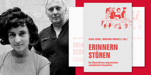
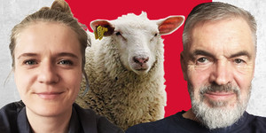
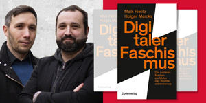
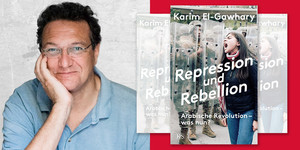
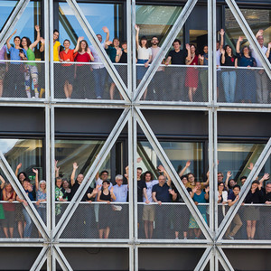
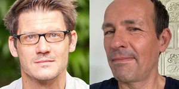
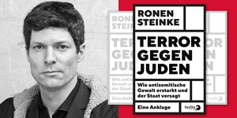
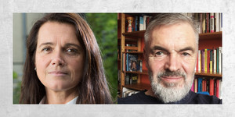
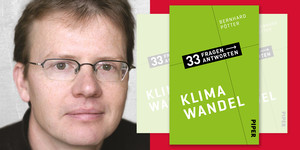

taz Talk, unser audiovisuelles Diskussions-Format als Livestream hier auf taz.de/talk und anschließend jederzeit und kostenlos als Video zum nochmal Anschauen. Sehen, Einmischen und Mitreden. #taztalk
Ob Gespräche, Lectures, Lesungen, Debatten oder Diskussionen – auf dem taz lab, in der taz Kantine und im taz Studio der großen Buchmessen schaffte die taz bisher schon einen Zugang zu ungedruckter Öffentlichkeit. Unsere taz Talks erweitern dieses Angebot um den endlosen Diskursraum des Netzes. Live, streitbar und offen für alle.
Die erste Ausgabe der Reihe "taz Talks meets Queer Lectures" mit A. Lahl zum Veralten der sexualutopischen Psychoanalyse – Herbert Marcuse 1968 und heute.
Aus der Reihe „taz Talks meets Queer Lectures", diesmal mit Monty Ott zum Thema: „Jüd:innen und Antisemitismus im intersektionellen Aktivismus“
Kreuzbergs Bürgermeisterin Monika Herrmann und Berlins Kultursenator Klaus Lederer diskutieren live im taz Talk über die linke Metropole Berlin.
Ein Gespräch mit den Herausgeber*innen des Buches „Erinnern stören. Der Mauerfall aus migrantischer und jüdischer Perspektive“ und Doris Akrap
Unser Liveprogramm zur US-Wahl 2020 mit Zahlen, Analysen und Hintergründen live von Mitternacht bis in den Abend.
Pushbacks, Moria und Co. – Ist das Asylrecht in Europa noch zu retten? DeZIM und taz laden ein zum Gespräch über Politik und Gewissen.
Der BER ist fertig – aber wofür wird er gebraucht? Berlins grüne Fraktionschefin Antje Kapek im Gespräch mit taz-Redakteur Bert Schulz.
taz-Redakteurin Malene Gürgen im Gespräch mit Bianca Klose von der Mobilen Beratung gegen Rechtsextremismus.
Ein taz Talk live aus dem Dannenröder Forst, basierend auf einem Brief von André Rösner. Lasst uns zuhören.
Im Talk mit taz-Berlinreporterin Susanne Messmer, spricht und schwärmt Paul Spies, Leiter des Berliner Stadtmuseums, von 40 Jahren Stadt im Umbruch.
Die taz-Redakteurin Heike Haarhoff dekonstruiert Denk- und Handlungslogiken publizierender Personen.
Robert Claus im Gespräch mit Andreas Rüttenauer über sein neues Buch „Ihr Kampf – Wie Europas Rechte für den Umsturz trainiert”.
Laid Back – der dissonante Blick auf das Zeitgeschehen mit Katrin Gottschalk und Jan Feddersen im Livestream.
Iris Hanika im Gespräch über ihr neues Buch „Echos Kammern“ und was Gentrifizierung mit Menschen macht.
Ein Gespräch mit Holger Marcks und Maik Fielitz über ihr Buch „Digitaler Faschismus“ zu Mythen und Techniken rechter Propaganda.
Ein Streitgespräch der beiden Autoren Ijoma Mangold und Marko Martin, moderiert von Doris Akrap.
Cancel Culture: Konservative Angstprojektion, Gefahr für die demokratische Debatte oder antifaschistischer Segen?

Nicht verpassen: Ronya Othmann, Autorin des Romans „Die Sommer", liest im taz Buchmessen Gespräch in der taz Kantine und im digitalen Kanal!
Fremd sein, sich anders fühlen und zur Anderen gemacht werden. Anna Prizkau spricht über ihr Erzähldebüt „Fast ein neues Leben".
Das neue Buch Jakob Heins über Hypochonder und andere Menschen. Eine Lesung mit dem Autor in der taz Kantine, zu der wir Sie herzlich einladen.
In dieser Ausgabe von „DeZIM meets taz“ sprechen wir mit Jeannette Gusko, Patrice G. Poutrus, Kathleen Heft und Julia Boek.
Ijoma Mangold im Gespräch mit taz-Redakteurin Doris Akrap über sein neues Buch mit dem großartigen Titel „Der innere Stammtisch".
Die Autorin Unda Hörner im Gespräch mit Nicola Schwarzmaier über Ihr Buch „1929, Frauen im Jahr Babylon“.
Karim El-Gawhary im Gespräch mit Beate Seel über sein neues Buch „Repression und Rebellion. Arabische Revolution - was nun?".
Eine historische Lagebeurteilung von Daniel Cohn-Bendit – im Gespräch mit Jan Feddersen.
Freitag, 25. September, Klimastreik in einem breiten Bündnis: Demos, Aktionen – mit Fridays For Future.
50 Klimaaktivist:innen kapern die taz-Ausgabe zum Global Strike Day am 25.09.2020. Wie geht es weiter mit der Bewegung? Ein Gespräch.
Till Randolf Amelung ist einer der interessantesten und freundlichsten Publizisten aus dem queeren Spektrum - im taz Talk stellt er sich allen Fragen.
Einmalig: 12 Stunden lang gemeinsam live im Stream mit über 30 tazler:innen – und mit Ihren Fragen und Meinungen.
Ein taz Talk über die ernüchternden politischen Verhältnisse rund um Frankfurt wie auch in Israel – eine politische Heimatkunde.
Ein Wochengespräch mit Katrin Gottschalk und Jan Feddersen: taz Talk über den ausgehenden Corona-Sommer und Fun Facts zum Herbst.
taz Talk über das politische Sachbuch der Saison: „Demokratie“, garantiert privilegienkritisch.
Die deutsche Altenpflege ist auf polnische Fachkräfte angewiesen. Wie wirkten sich Grenzschließungen und Lockdown auf die Pflege und die Pflegenden aus und was können wir für die Zukunft lernen? Ein Gespräch.
Die taz führt eine klimagerechte Sprache ein. Ein Gespräch mit ihrem Erfinder Prof. Dr. Torsten Schäfer
Detlef Pollack im Gespräch mit taz-Redakteurin Julia Boek über sein neues Buch und den Gemütszustand der Ostdeutschen.
Ronen Steinke im Gespräch mit taz-Redakteurin Dinah Riese über sein Buch zum Staatsversagen bei antisemitischer Gewalt.
Nicola Schwarzmaier spricht mit Franziska Hauser über ihren aktuellen Roman „Die Glasschwestern“.

In dieser Episode von von DeZIM meets taz talk sprechen wir über „Corona-Rassismus“ und Solidarität in Zeiten der Krise.
Eine Stimme für die Marginalisierten, ohne ethnische Zuschreibungen, ohne kollektivistische Klischees und Vorurteile, moderiert von Jan Feddersen.
Laid Back - der coole Blick auf die vergangenen Woche mit Katrin Gottschalk und Jan Feddersen.
Peter Unfried im Gespräch mit dem Intellektuellen Armin Nassehi, der soeben das ultimative Protest-Buch „Das große Nein“ herausgebracht hat.
Ein Gespräch mit Begoña Hermann, Günter Burkhardt und Olaf Kleist über die aktuelle Situation von Geflüchteten in den Unterkünften.
Die grüne Politikerin Aminata Touré zu Rassismus und dem Wort „Rasse“ im Grundgesetz im Gespräch mit Jan Feddersen.
Zehn Jahre nach den Missbrauchsskandalen: Ein Gespräch mit Nina Apin, Matthias Katsch und Doris Akrap über den Kampf gegen Kindesmissbrauch.
Adrienne Goehler im Gespräch mit Hannes Koch über das Bedingungslose Grundeinkommen als Voraussetzung für Klimaschutz.
Edgar Wolfrum im Gespräch mit Jan Feddersen über sein Buch „Der Aufsteiger. Eine Geschichte Deutschlands von 1990 bis heute“.
Kathrin Weßling im Gespräch mit Nicola Schwarzmaier über ihr Buch „Nix passiert“, die Geschichte einer Generation auf der Suche nach allem und nichts.
taz-Chefredakteurin Barbara Junge im Gespräch mit dem Grünen Tübinger Oberbürgermeister Boris Palmer.
Diskutieren Sie live mit uns, moderiert von Barbara Junge, taz-Chefredakteurin und Jan Feddersen, taz-Redakteur für besondere Aufgaben.
Ein taz Talk zu den beginnenden Sommerferien mit dem Historiker Valentin Groebner und Jan Feddersen.
Was können wir selbst tun, ganz konkret? Bernhard Pötter im Gespräch mit taz-Chefredakteurin Barbara Junge über sein Buch „Klimawandel“.
In dieser Ausgabe von DeZIM meets taz talk sprechen wir über systemrelevante Berufsgruppen und Ungleichheiten auf dem Arbeitsmarkt.
Diskussionen, Streit und Unterhaltung im Livestream auf taz.de. Sie haben Fragen zu den taz Talks? Schreiben Sie uns:
• per Kontaktformular
• per Mail: taztalk@taz.de
• per Post: taz, die tageszeitung
Redaktion taz Talk
Friedrichstr. 21
10969 Berlin
Entdecken Sie die Podcasts der taz. Unabhängige Stimmen, Themen und Meinungen – nicht nur fürs linke Ohr. taz.de/podcast
Abonnieren Sie unseren wöchentlichen Newsletter für alle taz-News. Eine Vorschau auf die Themen der Zeitung gibt's im täglichen Newsletter.
Die taz kann auch schön! Bilder und Nachrichten aus dem taz-Alltag und der Welt finden Sie auf Instagram.
Bewegtbild von der taz, Videos von der Buchmesse oder dem taz Lab finden Sie in unserem YouTube-Kanal.
Die Redaktion zwitschert alle Nachrichten aus der taz und der Welt auch unter @tazgezwitscher.
Aktuelle Artikel, Reportagen und Informationen aus dem Verlag finden Sie auch auf unserer Facebookseite.